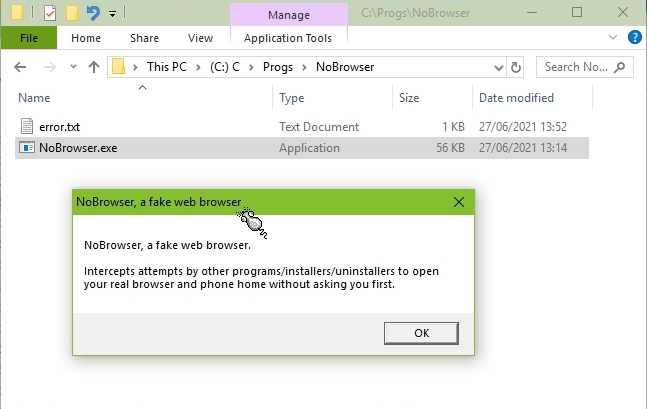
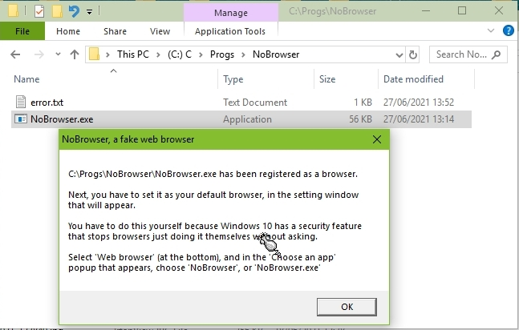
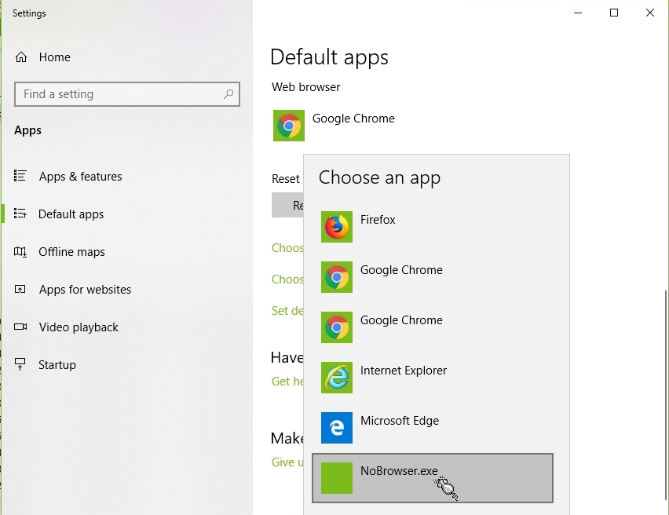
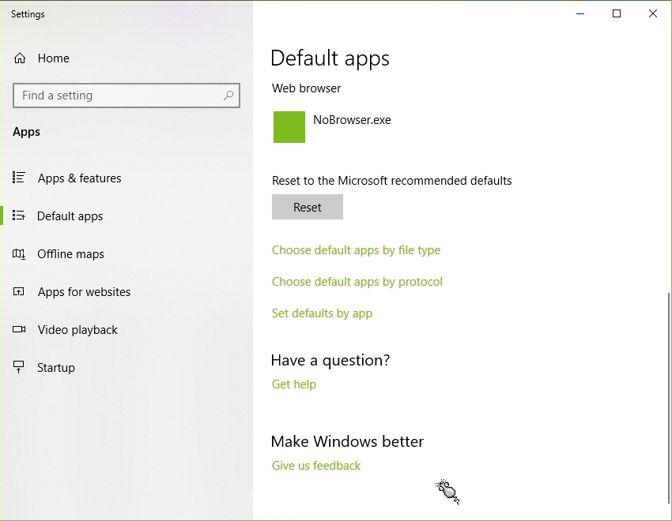
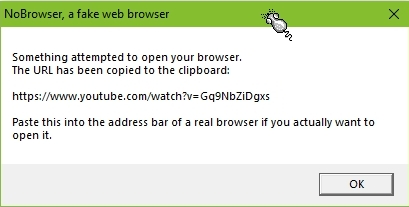

NoBrowser
Because you decide when your browser visits a website, and not some app that doesn't like being uninstalled
You know when you uninstall a 'free' program that didn't do what it advertised it could, and was full of 'please pay money for this feature' upsell bleating, how sometimes it will just open your web browser, without asking, to a page that demands you tell the publisher why you uninstalled their junk?.
Even if you have set your Windows firewall to block any program you have not yourself added to its 'allowed programs' list, any program can still 'phone home' using this sneaky browser trick.
Well, this tiny app will prevent such nonsense. It will stop any program opening your browser with a url that contains who-knows-what information about you or PC after the '?' on the url.
It works by registering itself to Windows as a web browser (a pretend one), so that Windows will show it as one of the choices of browser available.
Then when some impolite program asks windows to open some url, this small app opens instead, and copies the requested url to Windows's clipboard. You can then choose to open your browser yourself and paste the url (ctrl-V) to the browser address bar. Or you can ignore it.
The first time you run it you have to choose it as your chosen web browser on a Windows configuration page. You have to do this manually because Windows doesn't let any old program do it automatically because any old program used to do that rather too often. This app will automatically open the correct configuration page for you.
Chrome/Firefox/etc will of course shout 'I am not your default web browser! I am very important!'. Tough.
Even if you have set your Windows firewall to block any program you have not yourself added to its 'allowed programs' list, any program can still 'phone home' using this sneaky browser trick.
Well, this tiny app will prevent such nonsense. It will stop any program opening your browser with a url that contains who-knows-what information about you or PC after the '?' on the url.
It works by registering itself to Windows as a web browser (a pretend one), so that Windows will show it as one of the choices of browser available.
Then when some impolite program asks windows to open some url, this small app opens instead, and copies the requested url to Windows's clipboard. You can then choose to open your browser yourself and paste the url (ctrl-V) to the browser address bar. Or you can ignore it.
The first time you run it you have to choose it as your chosen web browser on a Windows configuration page. You have to do this manually because Windows doesn't let any old program do it automatically because any old program used to do that rather too often. This app will automatically open the correct configuration page for you.
Chrome/Firefox/etc will of course shout 'I am not your default web browser! I am very important!'. Tough.

To 'install', just make a new empty folder somewhere and copy the NoBrowser.exe file to it.
Don't use 'Program Files' though, unless you know how to get around Windows's protection of that folder.
Then, right-click NoBrowser.exe, and select 'Run as administrator'.
Windows should show a confirmation dialogue.
It needs to run as administrator because it adds an entry to the registry list of browsers.
If you don't run it as administrator you get an unhelpful error message that could be somewhat better.
Don't use 'Program Files' though, unless you know how to get around Windows's protection of that folder.
Then, right-click NoBrowser.exe, and select 'Run as administrator'.
Windows should show a confirmation dialogue.
It needs to run as administrator because it adds an entry to the registry list of browsers.
If you don't run it as administrator you get an unhelpful error message that could be somewhat better.

Here is the message it shows when you first install it.
If you change your chosen web browser you can change it back to NoBrowser by repeating this process.
If you change your chosen web browser you can change it back to NoBrowser by repeating this process.

It tells you what will happen next.

Windows's 'Default apps' page opens. Scroll down to the 'Web browser' part. Here you can see it is currently Google Chrome (for illustrative purposes).
Click the 'NoBrowser' entry. It won't be a green box though, that's my Windows explorer colour setting. This app is too cheap to have it's own icon.
Click the 'NoBrowser' entry. It won't be a green box though, that's my Windows explorer colour setting. This app is too cheap to have it's own icon.

Here it is set as the current browser.

And this is what happens when a program tries to open a page on your browser.
In this case it was me clicking a link in discord. It's a cat video.
The requested url will have been copied to the Windows clipboard. You can open it in a web browser by pasting it into the its address bar. (ctrl-V, or right click > paste).
In this case it was me clicking a link in discord. It's a cat video.
The requested url will have been copied to the Windows clipboard. You can open it in a web browser by pasting it into the its address bar. (ctrl-V, or right click > paste).